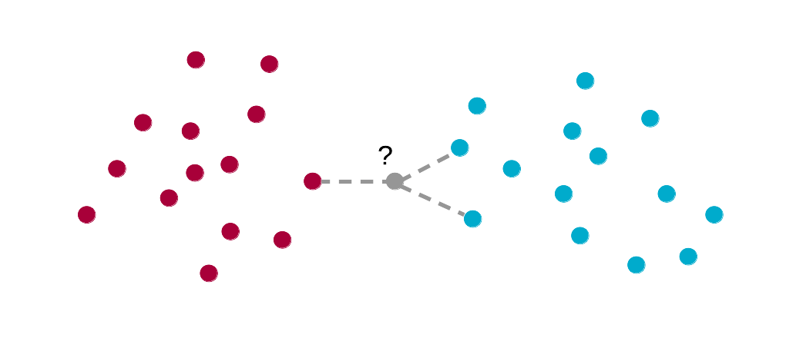
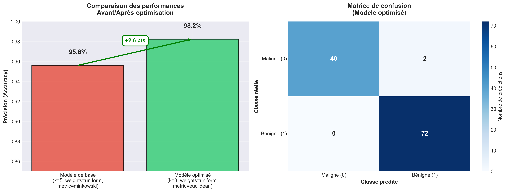

Ce projet, réalisé dans le cadre du BUT Science des Données (Université de Caen, 2025-2026), vise à optimiser l'algorithme k-Nearest Neighbors appliqué au dataset Breast Cancer Wisconsin. L’objectif principal est d’identifier la configuration de paramètres offrant la meilleure précision.
L’optimisation du modèle K‐NN a été réalisée à l’aide de la fonction GridSearchCV de la bibliothèque sklearn. Cette méth‐ ode permet de tester automatiquement plusieurs combinaisons d’hyperparamètres afin de trouver celle qui maximise la performance moyenne mesurée par validation croisée.

Visualisation extraite du poster — comparaison avant/après optimisation.